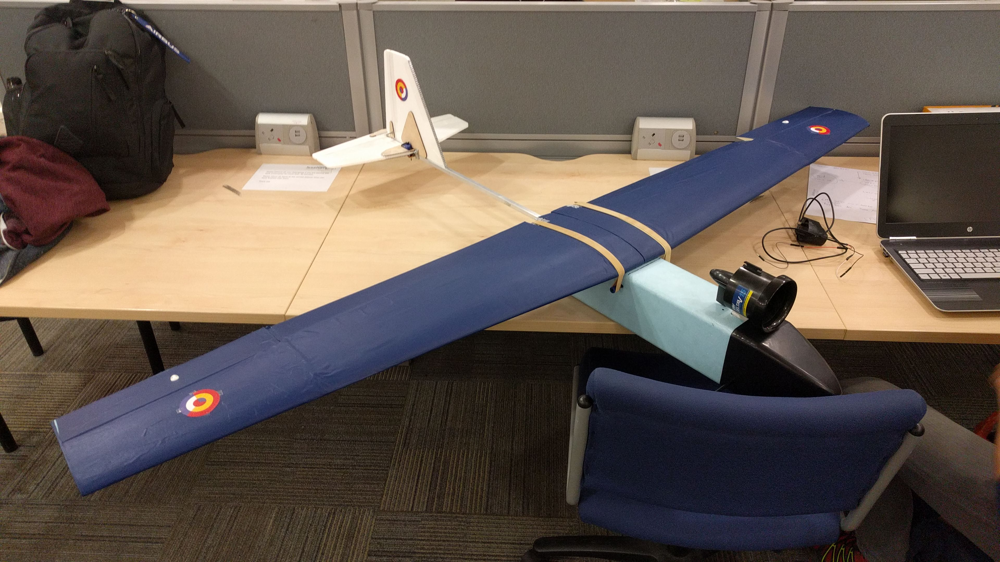
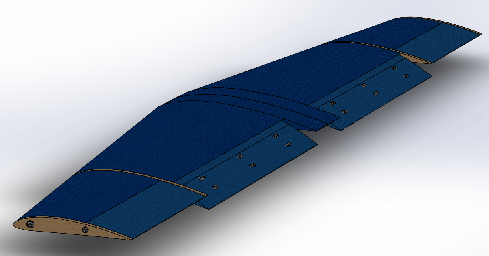
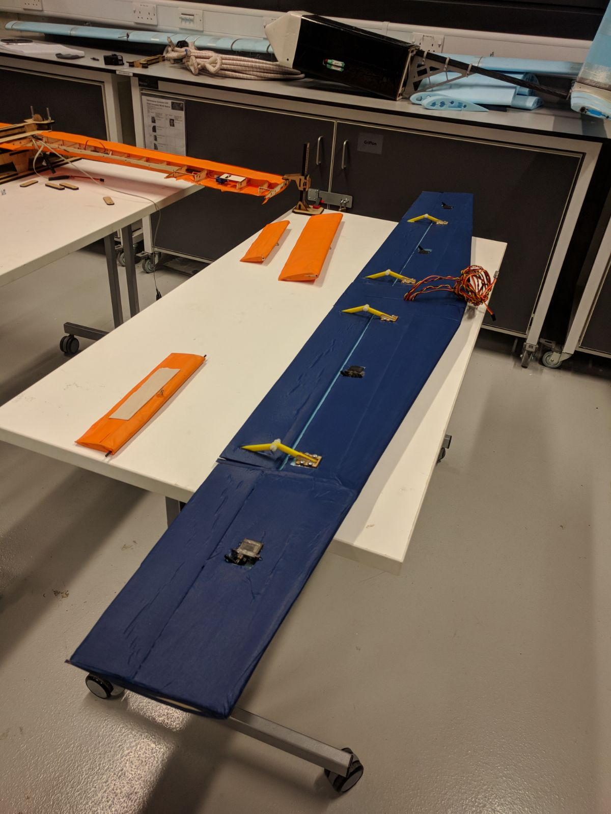
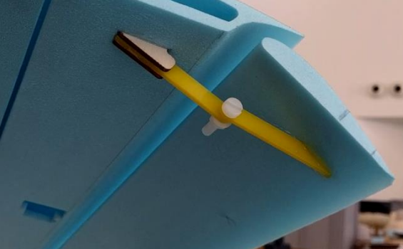
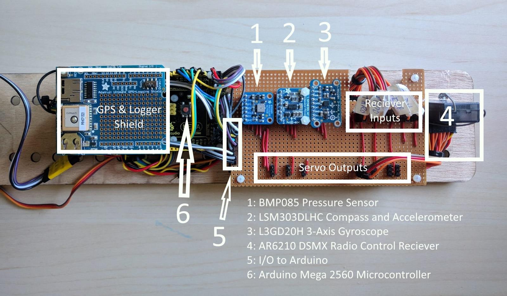

Fixed Wing UAV:

This project comprised the design, manufacture and testing of a 1.8 m wingspan UAV. It was carried out by a team of five students. The team had to design, build and test the main wing, as well as the onboard electronics and data logging system from scratch. We only started with an empty fuselage and the tail.
The project rules set specific constraints regarding aircraft weight and size. This project provided us with very valuable experience about the challenges faced by aerospace engineers when dealing with tight mass, volume, time and cost budgets.


My responsibilities within the project consisted in the design and manufacture of the wing, assuming leadership during the manufacturing and testing phase of the project. I also edited the final project report.
The design of the wing started with several concept sketches devised by the team members. The final candidate was selected based on its manufacturing feasibility and theoretical aerodynamic performance. The final shape of the airfoil and wing were selected based on analysis and optimisation performed on XFLR5. This geometry was then translated into a detailed CAD assembly which was used to study the structural properties of the wing with FEA simulations.
The final design of the wing was comprised of six main styrofoam sections, six plywood ribs, four deployable aerodynamic surfaces (two ailerons and two flaps featuring a slotted flap design) and four woven carbon fibre tubes acting as load bearing spars. The entire wing was covered with a mylar fibre skin which produced a very resistant skin which helped to strenghten and stiffen the wing.
To deploy the slotted flaps, a hinge mechanism was designed, tested, and fitted onto both aerodynamic surfaces. The hinge ultimate strenght was assesed with destructive tests, which showed that the wing would break before the hinge itself.

Before final assembly of the wing onto the fuselage, an static loading test was carried out in which its stiffness was assesed. During the test, weight was added progressively at the wingtip and its deflection was measured. The test required the wing to reach a high tip deflection without catastrophic failure in order to ensure its airworthiness.
The onboard electronics were centered around an Arduino MEGA microcontroller, which processed the inputs from the radio controller and delivered them to the servos and the ducted fan propulsion system. The system also included a wide variety of sensors to provide telemetry data: barometer, 3-axis gyroscope, 3-axis magnetometer, 3-axis acceleromter and a GPS receiver. This data was logged onto an onboard SD card for post-flight analysis. The onboard computer also featured a PID control loop autopilot function which was designed to hold the airplane attitude without pilot input.

The final test of the UAV system consisted in a test flight in which all its features were tested in depth. The aircraft proved able to maintain stable flight with minimal control inputs, while also retaining considerable maneuvrability. The test took place in gusty flight conditions (up to 11 m/s) demonstrating that the stability margins applied had been computed correctly. The top speed of the aircraft could not be assesed since the only pitot tube available had been rendered unusable due to an accident in an earlier team's UAV which crashed with it onboard.
The test revealed that we had not refined the autopilot's PID constants enough since it overreacted to disturbances. We had previously tested the system on the ground, but we couldn't refine it unless we tested it iterativelly in the air. The flaps couldn't be tested during the flight since the servos authority to secure them properly in place during flight was deemed insufficient. This could have caused severe problems while in the air due to the possibility of experiencing flap flutter. To go around this issue and proceed with the test flight, we decided to secure the flaps to the wing with tape.
Overall, I consider this project to have been very successful. It proved that we are able to design and build a machine that can fly beautifully while recording lots of telemetry & payload data to serve very different missions. Below is a video of the test flight recorded from the ground: